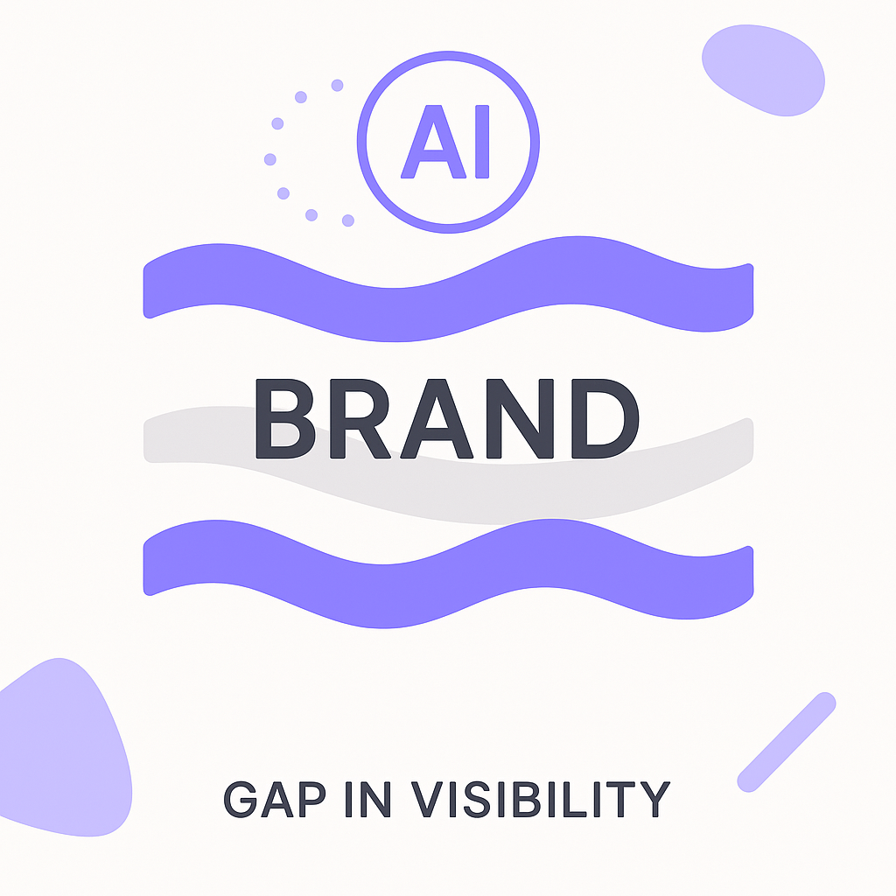
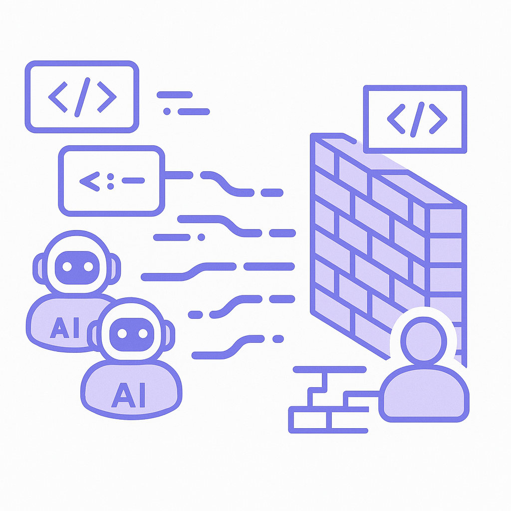

Publishing Recommendation
publishToday's drafts effectively capture current AI trends with insightful observations, particularly the impact of faster API responses and competitive pricing in AI services. The posts are practical, avoiding hype while offering clear mechanisms and potential trade-offs. They align well with our brand voice, providing actionable insights without overstating AI capabilities. Suggested comments connect cultural and business insights, offering valuable perspectives.
LinkedIn Posts (8)
1. OpenAI Decisions API Hits Public Beta With 10x Faster Typed Answers ★ Purands solution · high priority
CTA: How would you leverage faster AI responses in your customer engagement strategy?
Alternative hooks
- OpenAI's new API is 10x faster. What does that mean for customer engagement?
- Faster AI responses could redefine CRM strategies. Here's how.
- Speed is the new currency in customer interactions. Are you ready?
Research behind this post (sources, summaries & confidence)
OpenAI Decisions API Hits Public Beta With 10x Faster Typed Answers conf 0.85 · AI industry
The public beta of OpenAI's Decisions API offering faster responses could significantly enhance user interactions in AI applications, influencing CRM operations and customer engagement strategies.
Sources & what I took from each
- Public beta of OpenAI Decisions API with faster responses: OpenAI has announced a public beta for the Decisions API, which claims to deliver typed answers 10x faster, potentially impacting CRM and user engagement. ↗ read source
Original trend links
Risks / caveats
- The performance improvements may not translate into better user experiences if not effectively integrated.
- Initial bugs and issues common in beta releases.
2. AI visibility gap: Why great brands disappear from AI answers ★ Purands solution · high priority
CTA: How are you addressing the AI visibility gap in your marketing strategy?

⬇ Download image
Image prompt · flat-vector
Caption: AI visibility gap in brand presence.
Alternative hooks
- Ever wonder why some brands vanish from AI-generated content?
- Why do great brands disappear from AI answers?
- AI systems can make key brands quietly fade away.
Research behind this post (sources, summaries & confidence)
AI visibility gap: Why great brands disappear from AI answers conf 0.75 · AI industry
The AI visibility gap highlights the challenges brands face in maintaining visibility in AI-generated content, impacting marketing strategies and brand management.
Sources & what I took from each
- AI visibility gap affects brand visibility in AI-generated content: The article discusses how AI systems can inadvertently omit certain brands from results, affecting their visibility. ↗ read source
Original trend links
Risks / caveats
- Brands may need to adapt their strategies to ensure visibility in AI platforms.
- Potential biases in AI algorithms that could affect brand representation.
3. Connecting AI agents to enterprise knowledge ★ Purands solution · high priority
CTA: How are you integrating AI into your customer engagement strategies?

Image prompt · flat-vector
Caption: AI agents connect to enterprise knowledge.
Alternative hooks
- Here's a thought: AI agents connected to enterprise knowledge can supercharge your CRM systems.
- Ever wondered how AI can make your CRM smarter?
- Connecting AI agents to enterprise knowledge is a game-changer for customer engagement.
Research behind this post (sources, summaries & confidence)
Connecting AI agents to enterprise knowledge conf 0.70 · Customer Data Platforms
Connecting AI agents to enterprise knowledge is crucial for improving their ability to provide value through informed decision-making, impacting customer data platforms and CRM systems.
Sources & what I took from each
- Connecting AI agents to enterprise knowledge improves AI agent efficacy: The article discusses methods and potential benefits of integrating AI agents with enterprise knowledge systems. ↗ read source
Original trend links
Risks / caveats
- Complex integration processes can be costly and time-consuming.
- Security and data privacy concerns in handling enterprise knowledge.
4. Microsoft AI’s MAI-Transcribe-2 undercuts competitors on price and speed
CTA: How do you think competitors will react to Microsoft's pricing strategy?
Caption: MAI-Transcribe-2's price and speed advantage.
Alternative hooks
- Microsoft's latest move in AI transcription is all about speed and cost.
- Can cheaper and faster transcription redefine the AI market?
- Microsoft AI's cost-cutting measure could change the transcription game.
Research behind this post (sources, summaries & confidence)
Microsoft AI’s MAI-Transcribe-2 undercuts competitors on price and speed conf 0.90 · AI industry
Microsoft's competitive pricing and speed in AI transcription services could drive broader adoption and influence market dynamics in AI-powered customer communications and data processing.
Sources & what I took from each
- MAI-Transcribe-2 is cheaper and faster than competitors: Reports confirm that Microsoft's MAI-Transcribe-2 offers transcription services at a lower price and faster speed compared to its competitors. ↗ read source
Original trend links
Risks / caveats
- Potential quality trade-offs with lower pricing.
- Market reaction and strategic responses from competitors.
5. Vitalize raises $31M Series A for hospital AI platform
CTA: What do you see as the biggest challenge for AI integration in healthcare?
Alternative hooks
- Vitalize just grabbed $31 million to reshape hospital operations with AI.
- AI in healthcare is getting a serious boost: Vitalize raises $31M.
- Can $31 million revolutionize hospital operations? Vitalize thinks so.
Research behind this post (sources, summaries & confidence)
Vitalize raises $31M Series A for hospital AI platform conf 0.85 · AI startups
Vitalize's funding round signifies growing investment in AI platforms that optimize operations, which could influence strategies in data-driven decision-making and efficiency improvements.
Sources & what I took from each
- Vitalize raises $31M Series A for its hospital AI platform: The funding round has been confirmed by multiple sources, highlighting investment in AI platforms for healthcare optimization. ↗ read source
Recent news
- {'headline': 'Vitalize Secures $31M to Revolutionize Hospital Operations with AI', 'date': '2026-10-11', 'url': 'https://www.techmeme.com/261011/p13#a261011p13'}
Original trend links
Risks / caveats
- Challenges in integrating AI solutions in existing hospital systems.
- Regulatory hurdles in healthcare AI applications.
6. AI coding agents generate more code, but not more software
CTA: Have you encountered challenges with integrating AI-generated code?

⬇ Download image
Image prompt · flat-vector
Caption: AI coding agents hitting a human review wall.
Alternative hooks
- AI writes more code, but where's the software?
- Cranking out code doesn't mean faster software development.
- AI coding agents: code generators or just code bloat?
Research behind this post (sources, summaries & confidence)
AI coding agents generate more code, but not more software conf 0.80 · AI industry
The efficiency gains of AI coding agents are offset by the human review bottleneck, indicating challenges in fully automating software development. This affects the integration of AI in business processes and the potential efficiency improvements.
Sources & what I took from each
- AI coding agents generate more code but not more usable software: The source discusses the limitations of AI coding agents, particularly the human review bottleneck preventing further automation in software development. ↗ read source
Original trend links
Risks / caveats
- Increased code generation without effective integration can lead to code bloat.
- Human intervention is still critical, potentially limiting scalability.
7. Alibaba Qwen Releases Qwen-Image-2.1-Turbo
CTA: How do you see advanced image models reshaping marketing strategies?
Alternative hooks
- Alibaba's latest AI model is turning heads.
- Can Qwen-Image-2.1-Turbo change the game in visual commerce?
- The future of marketing might just be visual.
Research behind this post (sources, summaries & confidence)
Alibaba Qwen Releases Qwen-Image-2.1-Turbo conf 0.80 · AI startups
Alibaba's release of an advanced image model highlights the ongoing innovation in AI startups and its potential applications in visual commerce and marketing.
Sources & what I took from each
- Release of Qwen-Image-2.1-Turbo by Alibaba: Reports confirm Alibaba's release of an advanced image model, which could have significant applications in visual commerce and marketing. ↗ read source
Original trend links
Risks / caveats
- Market competition from other AI image models.
- Need for robust infrastructure to support large-scale deployment.
8. Amazon in talks to buy AI startup Decart for ~$7B
CTA: How do you think Amazon's potential acquisition of Decart will impact the AI landscape?

Image prompt · flat-vector
Caption: Amazon's strategic AI acquisition move.
Alternative hooks
- Amazon is eyeing a $7 billion acquisition in the AI space.
- The race for AI dominance might see a new chapter with Amazon's latest move.
- Personalization in commerce is heating up as Amazon considers a major acquisition.
Research behind this post (sources, summaries & confidence)
Amazon in talks to buy AI startup Decart for ~$7B conf 0.70 · AI startups
Amazon's potential acquisition of Decart highlights the tech giant's continued investment in AI capabilities. This move could impact the competitive landscape in AI technology and commerce, particularly in customer data and personalized experiences.
Sources & what I took from each
- Amazon is in talks to acquire Decart for ~$7B: There are multiple reports and industry discussions indicating that Amazon is in negotiations to acquire Decart. ↗ read source
Recent news
- {'headline': 'Amazon Eyes $7 Billion Acquisition of AI Startup Decart', 'date': '2026-10-11', 'url': 'https://www.techmeme.com/261011/p11#a261011p11'}
Original trend links
Risks / caveats
- The acquisition might face regulatory scrutiny given Amazon's market position.
- Cultural and strategic integration challenges post-acquisition.
Today's Trends
| # | Trend | Category | Why it matters |
|---|---|---|---|
| 1 | Virtual try-on launches on ChatGPT
source |
AI industry | The integration of virtual try-on capabilities into ChatGPT is a significant advancement in AI for e-commerce. This feature can potentially enhance customer engagement and conversion rates by providing an interactive shopping experience. |
| 2 | Amazon in talks to buy AI startup Decart for ~$7B
source |
AI startups | Amazon's potential acquisition of Decart highlights the tech giant's continued investment in AI capabilities. This move could impact the competitive landscape in AI technology and commerce, particularly in customer data and personalized experiences. |
| 3 | AI coding agents generate more code, but not more software
source |
AI industry | The efficiency gains of AI coding agents are offset by the human review bottleneck, indicating challenges in fully automating software development. This affects the integration of AI in business processes and the potential efficiency improvements. |
| 4 | Microsoft AI’s MAI-Transcribe-2 undercuts competitors on price and speed
source |
AI industry | Microsoft's competitive pricing and speed in AI transcription services could drive broader adoption and influence market dynamics in AI-powered customer communications and data processing. |
| 5 | OpenAI Decisions API Hits Public Beta With 10x Faster Typed Answers
source |
AI industry | The public beta of OpenAI's Decisions API offering faster responses could significantly enhance user interactions in AI applications, influencing CRM operations and customer engagement strategies. |
| 6 | WhatsApp chatbot for seamless customer support and commerce
source |
WhatsApp commerce | The development of a WhatsApp chatbot emphasizes the growing importance of messaging platforms in customer support and commerce, particularly in APAC where WhatsApp is widely used. |
| 7 | AI is ‘reshaping’ Walmart and Sparky is leading the charge
source |
AI industry | Walmart's AI-driven transformation led by Sparky showcases the potential of AI in retail operations and customer experience, setting a precedent for other retailers. |
| 8 | Connecting AI agents to enterprise knowledge
source |
Customer Data Platforms | Connecting AI agents to enterprise knowledge is crucial for improving their ability to provide value through informed decision-making, impacting customer data platforms and CRM systems. |
| 9 | Shopify loyalty and rewards app for small merchants
source |
Shopify ecosystem | A loyalty and rewards app tailored for small merchants on Shopify can drive retention and repeat purchases, fostering growth in the Shopify ecosystem. |
| 10 | Lifecycle, CRM and retention marketing for AI agents
source |
AI industry | Developing lifecycle and CRM strategies for AI agents enhances their ability to manage customer relationships and drive retention, aligning with Purands AI's focus. |
| 11 | AI visibility gap: Why great brands disappear from AI answers
source |
AI industry | The AI visibility gap highlights the challenges brands face in maintaining visibility in AI-generated content, impacting marketing strategies and brand management. |
| 12 | Alibaba Qwen Releases Qwen-Image-2.1-Turbo
source |
AI startups | Alibaba's release of an advanced image model highlights the ongoing innovation in AI startups and its potential applications in visual commerce and marketing. |
| 13 | EmTech Future 2026: When AI Meets Everything
source |
AI industry | The EmTech Future 2026 event explores AI's transformative potential across various sectors, providing insights into future trends and innovations relevant to retention marketing. |
| 14 | Vitalize raises $31M Series A for hospital AI platform
source |
AI startups | Vitalize's funding round signifies growing investment in AI platforms that optimize operations, which could influence strategies in data-driven decision-making and efficiency improvements. |
Risk Assessment
No risks flagged.
Suggested LinkedIn Comments (30)
Open each post, then paste the copied comment. Nothing is posted automatically.
1. insight · rss:techcrunch.com — TechCrunch Disrupt 2026 is built around one question: How do you build an enduri
Post by: rss:techcrunch.com
Why it works: This comment adds depth by focusing on long-term sustainability, encouraging a more substantial dialogue about AI integration.
↗ Open LinkedIn post to paste comment2. opinion · rss:techcrunch.com — Over the past couple of years, we’ve seen multiple reports that Apple was workin
Post by: rss:techcrunch.com
Why it works: The comment provides a clear stance on what Apple needs to achieve for success, adding value to the discussion.
↗ Open LinkedIn post to paste comment3. insight · rss:techcrunch.com — What does this mean for a fall full of movies starring villainous tech CEOs?
Post by: rss:techcrunch.com
Why it works: This comment connects cultural trends to industry practices, offering a nuanced view that deepens the conversation.
↗ Open LinkedIn post to paste comment4. opinion · rss:techcrunch.com — Less than 48 hours, TechCrunch Disrupt 2026 starts in San Francisco’s Moscone We
Post by: rss:techcrunch.com
Why it works: The comment emphasizes the value of the event, encouraging attendance while maintaining an informative tone.
↗ Open LinkedIn post to paste comment5. insight · rss:techcrunch.com — Year after year, investors who've explored the Expo Halls, met founders, and lea
Post by: rss:techcrunch.com
Why it works: This comment highlights the tangible benefits of attending, reinforcing the importance of face-to-face interactions.
↗ Open LinkedIn post to paste comment6. respectful challenge · rss:techcrunch.com — On Equity, we debate the impact of data center moratoriums and whether the AI in
Post by: rss:techcrunch.com
Why it works: The comment acknowledges a potential issue while advocating for responsible growth, adding depth to the debate.
↗ Open LinkedIn post to paste comment7. insight · rss:techcrunch.com — Welcome back to TechCrunch Mobility, your hub for the future of transportation a
Post by: rss:techcrunch.com
Why it works: The comment offers a balanced view of AI's impact, encouraging a focus on practical integration challenges.
↗ Open LinkedIn post to paste comment8. expansion · rss:techcrunch.com — Richualist is one of TechCrunch's Battlefield 200 Companies!
Post by: rss:techcrunch.com
Why it works: This comment broadens the discussion by linking the significance of the recognition to industry innovation.
↗ Open LinkedIn post to paste comment9. insight · rss:techcrunch.com — This Battlefield 200 startup has developed blood-purification tech to save child
Post by: rss:techcrunch.com
Why it works: The comment highlights the societal impact of the technology, adding moral weight to the discussion.
↗ Open LinkedIn post to paste comment10. insight · rss:techcrunch.com — Learn more about Paramount's planned acquisition of Warner Bros. Discovery — a h
Post by: rss:techcrunch.com
Why it works: This comment provides a strategic overview of the industry's direction, adding context to the significance of the deal.
↗ Open LinkedIn post to paste comment11. opinion · rss:www.theverge.com — In April of 2025, Elgin Community College had six Flock safety cameras installed
Post by: rss:www.theverge.com
Why it works: It addresses the core issue of data privacy, which is often overlooked in discussions about security technology.
↗ Open LinkedIn post to paste comment12. insight · rss:www.theverge.com — When President Donald Trump announced his plans to rebrand artificial intelligen
Post by: rss:www.theverge.com
Why it works: It cuts through the hype and emphasizes the importance of practical, value-driven AI development.
↗ Open LinkedIn post to paste comment13. insight · rss:www.theverge.com — The latest rumors are that the new Apple TV will have a built-in microphone, whi
Post by: rss:www.theverge.com
Why it works: It highlights the practical benefit of the new feature, focusing on user experience improvement.
↗ Open LinkedIn post to paste comment14. opinion · rss:www.theverge.com — If you thought you'd seen all there is to see from the Artemis II mission, you'r
Post by: rss:www.theverge.com
Why it works: It praises the initiative's contribution to the scientific community and public engagement.
↗ Open LinkedIn post to paste comment15. expansion · rss:www.theverge.com — George A. Romero is obviously best known as the father of the modern zombie movi
Post by: rss:www.theverge.com
Why it works: It encourages exploration of underappreciated works, adding depth to the discussion of Romero's impact.
↗ Open LinkedIn post to paste comment16. insight · rss:www.theverge.com — From Disney Plus to HBO Max, almost every major established streaming service is
Post by: rss:www.theverge.com
Why it works: It acknowledges the strategic necessity of adaptation in a rapidly evolving media landscape.
↗ Open LinkedIn post to paste comment17. opinion · rss:www.theverge.com — We are quickly coming up on Apple's "Welcome Home" launch event, where we expect
Post by: rss:www.theverge.com
Why it works: It speculates on the potential impact of a unified platform, which resonates with the current trend towards seamless tech ecosystems.
↗ Open LinkedIn post to paste comment18. insight · rss:www.theverge.com — This is The Stepback, a weekly newsletter breaking down one essential story from
Post by: rss:www.theverge.com
Why it works: It highlights a foundational aspect of gaming that has contributed to the franchise's long-term success.
↗ Open LinkedIn post to paste comment19. insight · rss:www.theverge.com — For multiple years, the hottest toy in the United States was a book. But not jus
Post by: rss:www.theverge.com
Why it works: It connects the trend to tangible educational benefits, justifying the investment from a parent's perspective.
↗ Open LinkedIn post to paste comment20. opinion · rss:www.theverge.com — I'm embarking on a journey I've so far been hesitant to go on: actually using AI
Post by: rss:www.theverge.com
Why it works: It acknowledges a critical privacy concern while highlighting the positive implications of local AI processing.
↗ Open LinkedIn post to paste comment21. opinion · rss:feeds.arstechnica.com — Alex Gibney's provocative film is compelling but overlong, and there's not much
Post by: rss:feeds.arstechnica.com
Why it works: It acknowledges the critique while valuing the role of storytelling in tech, offering a balanced perspective.
↗ Open LinkedIn post to paste comment22. insight · rss:feeds.arstechnica.com — Also: new trailer for <em>Godzilla Minus Zero</em>, the sequel to Takashi Yamaza
Post by: rss:feeds.arstechnica.com
Why it works: It connects the film's themes to broader cultural discussions, adding depth to the post's mention of the sequel.
↗ Open LinkedIn post to paste comment23. insight · rss:feeds.arstechnica.com — Participants meditated inside an MRI tube, with and without psilocybin.
Post by: rss:feeds.arstechnica.com
Why it works: It highlights the innovative approach of the study, adding value by discussing the intersection of tradition and technology.
↗ Open LinkedIn post to paste comment24. expansion · rss:feeds.arstechnica.com — Dissolved rock precipitated around the tools, which then decayed.
Post by: rss:feeds.arstechnica.com
Why it works: It broadens the post's focus by discussing the implications of natural preservation on understanding historical technologies.
↗ Open LinkedIn post to paste comment25. opinion · rss:feeds.arstechnica.com — One damaged data center has supercomputers used for training Yandex’s AI model.
Post by: rss:feeds.arstechnica.com
Why it works: The comment takes a clear stance on infrastructure resilience, relating it to real-world business implications.
↗ Open LinkedIn post to paste comment26. insight · rss:feeds.arstechnica.com — Stylish upcycling, with a retro flair, at Spain's Museo de Historia de la Comput
Post by: rss:feeds.arstechnica.com
Why it works: It connects the museum's efforts to broader themes of sustainability and heritage, enriching the post's topic.
↗ Open LinkedIn post to paste comment27. insight · rss:feeds.arstechnica.com — "We’ve made it clear that NASA will never give up its presence in low Earth orbi
Post by: rss:feeds.arstechnica.com
Why it works: This comment highlights the strategic importance of low Earth orbit, providing a nuanced view of NASA's goals.
↗ Open LinkedIn post to paste comment28. insight · rss:feeds.arstechnica.com — Before the lava fountains started, the ground was expanding by half a meter a da
Post by: rss:feeds.arstechnica.com
Why it works: It provides a broader perspective on the implications of geological changes, adding depth to the post's focus on the event.
↗ Open LinkedIn post to paste comment29. insight · rss:feeds.arstechnica.com — Study finds coding efficiency gains get "absorbed" by human review "bottleneck."
Post by: rss:feeds.arstechnica.com
Why it works: It pinpoints the human role as a bottleneck in tech processes, offering a practical insight into workflow optimization.
↗ Open LinkedIn post to paste comment30. opinion · rss:feeds.arstechnica.com — CDC allocated $1.6M for study on alleged harms of hepatitis B vaccine.
Post by: rss:feeds.arstechnica.com
Why it works: It underscores the significance of the CDC's decision, adding a layer of public health context to the post.
↗ Open LinkedIn post to paste comment